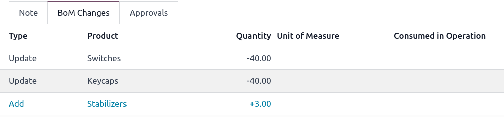
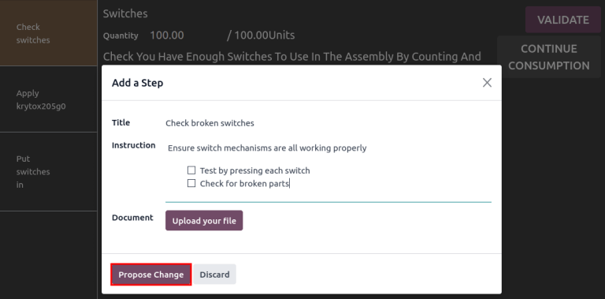

คำสั่งเปลี่ยนวิศวกรรม¶
ใช้ประโยชน์*คำสั่งเปลี่ยนวิศวกรรม*(ecos) เพื่อติดตามนำไปใช้และย้อนกลับเปลี่ยนเวอร์ชันที่ทำกับผลิตภัณฑ์และ: DOC: `ค่าวัสดุ<../../ Manufacturing/Basic_Setup/Bill_Configuration> `
สามารถสร้างคำสั่งซื้อการเปลี่ยนแปลงทางวิศวกรรมได้:
: Ref:
โดยตรงในประเภท Eco <plm/eco/create-eCo>โดยตัวดำเนินการใน: ref:
มุมมองแท็บเล็ต <plm/eco/tablet-view>ของการดำเนินการ.จากคำติชมโดยอัตโนมัติที่ส่งไปยัง: ref: `นามแฝงอีเมลของ Eco Type<plm/eco/eco-type> `
สร้าง eco¶
เพื่อสร้าง | Eco | เริ่มต้นด้วยการนำทางไปยังแอพ * PLM * | Eco | ในหน้า: guilabel: หน้าคำสั่งเปลี่ยนวิศวกรรมคลิกที่: guilabel: ใหม่ 'ปุ่มที่มุมบนซ้าย
Note
เรียนรู้วิธีการสร้างใหม่: ref: ประเภท eco <plm/eco/eco-type> เพื่อจัดหมวดหมู่และจัดระเบียบคำสั่งการเปลี่ยนแปลง เกี่ยวข้องกับความรับผิดชอบของพวกเขาไม่ว่าจะเกี่ยวข้องกับผลิตภัณฑ์ใหม่การแนะนำการอัปเดตสายผลิตภัณฑ์เป้าหมายหรือการปฏิบัติตามกฎระเบียบการปฏิบัติตาม
บน | eco |
: Guilabel: `คำอธิบาย 'เป็นบทสรุปสั้น ๆ ของการปรับปรุง
: Guilabel:
type: ระบุ | Eco | | ECOS |.: Guilabel:
สมัคร Onเป็นตัวกำหนดว่า | Eco | วัสดุ 'หรือ: Guilabel: `ผลิตภัณฑ์เท่านั้น': Guilabel: `ผลิตภัณฑ์ 'บ่งบอกถึงผลิตภัณฑ์ที่ดีขึ้น
: Guilabel:
Bill of Materialsระบุการเปลี่ยนแปลง | bom | หากผลิตภัณฑ์ใน: Guilabel:field productมีฟิลด์ที่มีอยู่ | bom | หลาย | BOMS | เมนู.: Guilabel: `ฟิลด์ บริษัท 'ใช้ในฐานข้อมูลหลาย บริษัท การเปลี่ยนแปลงใช้กับผลิตภัณฑ์ใน บริษัท เฉพาะหรือว่างเปล่าหากการเปลี่ยนแปลงใช้กับทุก บริษัท
: Guilabel:
รับผิดชอบแสดงถึงผู้รับมอบหมายที่รับผิดชอบเรื่องนี้ | Eco |(ไม่จำเป็น): guilabel: `` `` `` ระบุเมื่อ | Eco | : Guilabel: `โดยเร็วที่สุด 'หมายถึง | Eco | | Bom | <plm/eco/appl-changes> `
ในทางกลับกันการเลือก: Guilabel:
at Dateและการตั้งค่าเฉพาะวันที่ออกจากวันที่ที่ทำให้ง่ายต่อการติดตามประวัติเวอร์ชันของไฟล์| Bom | และวันที่เฉพาะ | BOMS | ใช้สำหรับการผลิต: Guilabel:
tagsได้รับมอบหมายให้ | ECOS | สร้างแท็กใหม่โดยพิมพ์ชื่อในฟิลด์และเลือก: Guilabel:Createจากเมนูแบบเลื่อนลง
หลังจากกรอก | Eco | ปุ่มเพื่อเริ่มใช้การเปลี่ยนแปลง
โดยการกด: Guilabel: `เริ่มแก้ไข 'สามการกระทำเกิดขึ้น:
: Guilabel:
documentsปุ่มอัจฉริยะปรากฏขึ้นจัดเก็บไฟล์ที่เกี่ยวข้องของ| bom |สำเนาของการผลิต | BOM | : Guilabel:
revisionปุ่มอัจฉริยะของ | Eco | หมายเลข (เช่นv2,` v3`, ... ) ได้รับมอบหมายให้ติดตามทั้งหมด | bom |เวอร์ชันขั้นตอนของ | Eco | มุมของ | eco |
Note
: Guilabel: revision ปุ่มอัจฉริยะมีอยู่ ** เท่านั้น ** เมื่อ: Guilabel: เลือกปุ่มตัวเลือก Bill of Materials` ในไฟล์: Guilabel: ใช้ฟิลด์ On และ:: Guilabel:` เริ่มการแก้ไข 'ถูกกด

เปลี่ยนส่วนประกอบ¶
หากต้องการปรับเปลี่ยนส่วนประกอบใน A | bom | ให้คลิกที่: Guilabel: revision Smartปุ่มบน | Eco | แยกแยะเวอร์ชันที่ไม่ใช่การผลิตของ | BOM | เวอร์ชันโดยการตั้งค่าสถานะการทดสอบ | BOM |
Example
หลังจากคลิกปุ่ม: Guilabel: เริ่มการแก้ไข 'สำหรับ | Eco | ผลิตภัณฑ์ `[D_0045 Stool] ทำการเปลี่ยนแปลงผลิตภัณฑ์ | Bom | : Guilabel: revision ปุ่มอัจฉริยะ ทำเครื่องหมายด้วยสีแดงขนาดใหญ่: Guilabel: `ธงเก็บถาวร '

ในแท็บใหม่ | bom |, ใน: guilabel: `` components` แท็บดำเนินการแก้ไขรายการส่วนประกอบโดยการเปลี่ยน: guilabel: ปริมาณ 'ของที่มีอยู่ส่วนประกอบการเพิ่มส่วนประกอบใหม่โดยใช้: Guilabel: `เพิ่มปุ่มบรรทัดและลบส่วนประกอบด้วย: Guilabel: `🗑 (ถังขยะ) ไอคอน

เปรียบเทียบการเปลี่ยนแปลง¶
เมื่อการเปลี่ยนแปลงเสร็จสมบูรณ์นำทางกลับไปที่ | eco | โดยคลิก`eco00x` ใน breadcrumbs ตั้งอยู่ที่มุมบนซ้าย แบบฟอร์มแท็บใหม่: guilabel: `` bom change '' แท็บแสดงความแตกต่างระหว่างไฟล์ปัจจุบัน | bom |
ข้อความสีน้ำเงินระบุส่วนประกอบใหม่ที่เพิ่มเข้ามาในการแก้ไข | BOM | ในการผลิต | Bom | | BOMS | ในขณะที่ข้อความสีแดงระบุส่วนประกอบที่ถูกลบออกในการแก้ไข | BOM |
การเปลี่ยนแปลงและการทดสอบถูกห่อหุ้มในการแก้ไข | bom | และทำ ** ไม่ใช่ **ส่งผลกระทบต่อ | BOM | : ref: การเปลี่ยนแปลงถูกนำไปใช้ <plm/eco/appli-changes>
Example
ดูสรุปความแตกต่างระหว่างแป้นพิมพ์ปัจจุบันและคีย์บอร์ดที่แก้ไข| BOMS |
เปลี่ยนการดำเนินงาน¶
หากต้องการปรับเปลี่ยนการดำเนินการใน A | BOM | ให้คลิกที่: Guilabel: revision Smartปุ่มบน | Eco |
ในใหม่ | bom | และแก้ไข | BOM | เปิด: Guilabel: Open: Operations หน้าต่างป๊อปอัพ
Note
แท็บ: guilabel: `` การดำเนินการ 'ไม่ใช่ * ไม่พร้อมใช้งานตามค่าเริ่มต้น นำทางไปที่: MenusElection: แอพการผลิต --> การกำหนดค่า -->การตั้งค่า `และตรวจสอบ:: guilabel: กล่องคำสั่งงาน
ทำการเปลี่ยนแปลงฟิลด์ใด ๆ ใน: Guilabel: Open: Operations Pop-Upหน้าต่างจากนั้นคลิก: Guilabel: save เมื่อเสร็จสมบูรณ์
สร้างการดำเนินการใหม่โดยคลิกที่: Guilabel: เพิ่มปุ่ม Line และลบการดำเนินการใหม่โดยคลิกปุ่ม: guilabel: `` การดำเนินการเก็บถาวร '
เปรียบเทียบการเปลี่ยนแปลง¶
เมื่อการเปลี่ยนแปลงเสร็จสมบูรณ์นำทางกลับไปที่ | eco | โดยคลิก`eco00x` ใน breadcrumbs ตั้งอยู่ที่มุมบนซ้าย
บน | eco | ความแตกต่างระหว่างการผลิตปัจจุบัน | BOM |
ข้อความสีน้ำเงินระบุการดำเนินการใหม่ที่เพิ่มเข้ามาในการแก้ไข | BOM | ยังมีอยู่ในการผลิต | bom | ทั้ง | BOM | ในขณะที่ข้อความสีแดงบ่งบอกถึงการดำเนินการที่ถูกลบออกในการแก้ไข| bom |
การปรับเปลี่ยน | BOM | การผลิต. การเปลี่ยนแปลง> `
ในแท็บ: guilabel: `` การเปลี่ยนแปลงการดำเนินการ 'รายละเอียดแต่ละแถวใต้คอลัมน์ในตารางสะท้อนข้อมูลต่อไปนี้:
: Guilabel:
Operation: ชื่อของการดำเนินการที่ได้รับการแก้ไข: Guilabel:
step: ระบุจุดควบคุมคุณภาพที่มองเห็นได้เมื่อการดำเนินการรวมถึงคำแนะนำโดยละเอียด
Note
หากต้องการตรวจสอบคำแนะนำให้คลิกรายการสายการดำเนินการใน: Guilabel: การดำเนินการ 'แท็บของ A | bom | หน้าต่างการดำเนินการ `หน้าต่างป๊อปอัพมองหา: guilabel: คำแนะนำ 'สมาร์ทปุ่มแสดงที่ด้านบน
Example
Assembly ': Guilabel: Operation' รวมถึง `10 'โดยละเอียด: Guilabel: `คำแนะนำ 'เพื่อให้เสร็จสมบูรณ์
: guilabel: `ประเภทของขั้นตอน 'รายละเอียดประเภทของการควบคุมคุณภาพสำหรับเพิ่มเติมคำแนะนำในการดำเนินการ
: Guilabel:
typeสอดคล้องกับข้อความสีเพื่อระบุว่าไฟล์แก้ไข | BOM | be: guilabel:add,: guilabel:` ลบ 'หรือ: guilabel: `update': Guilabel: `ศูนย์งาน 'ระบุศูนย์ทำงานที่การดำเนินการคือดำเนินการ
: Guilabel:
การเปลี่ยนแปลงระยะเวลาด้วยตนเอง 'หมายถึงการเปลี่ยนแปลงในไฟล์: guilabel: `ฟิลด์ระยะเวลาเริ่มต้น 'ใน: Guilabel:Open: Operations` Pop-หน้าต่างขึ้นซึ่งระบุเวลาที่คาดหวังสำหรับการดำเนินการเสร็จสิ้น
Example
แท็บ: guilabel: `การเปลี่ยนแปลงการดำเนินการ 'เปรียบเทียบการผลิต | bom | แก้ไข | BOM |
ในการแก้ไข | bom |, Assembly 'ใหม่: Guilabel: Operation` ที่: Guilabel: `` Work Center` `Assembly Line 1 'ถูกเพิ่มเข้ามา ระยะเวลาที่คาดหวังของการดำเนินการคือ `20.00 'นาทีตามที่ระบุโดย: Guilabel: `การเปลี่ยนแปลงระยะเวลาด้วยตนเอง '
เพื่อเสริมการดำเนินการ `แอสเซมบลี 'จุดควบคุมคุณภาพสองจุดเพิ่มคำแนะนำ:
อย่างแรกคือ:: guilabel:
step`qcp00039 ': Guilabel: `ลงทะเบียนการผลิต 'ของส่วนประกอบประการที่สอง: Guilabel:
stepคือ` qcp00034`,คำแนะนำ ': guilabel:ขั้นตอนType` ที่ให้รายละเอียดแอสเซมบลีเพิ่มเติม

ใช้การเปลี่ยนแปลง¶
หลังจากตรวจสอบการเปลี่ยนแปลงให้ย้าย | eco | <plm/eco/stage-config> `ซึ่งเป็นขั้นตอนที่ต้องได้รับการอนุมัติก่อนการเปลี่ยนแปลงที่ได้รับการแก้ไขสามารถนำไปใช้กับการผลิต | BOM |
เมื่อ Approvers ยอมรับการเปลี่ยนแปลงแล้ว: Guilabel: `ใช้การเปลี่ยนแปลง 'พร้อมใช้งาน ไปยังขั้นตอนการปิด การผลิต | bom | และการแก้ไข | bom |
ตรวจสอบการเปลี่ยนแปลง¶
เพื่อให้แน่ใจว่าการเปลี่ยนแปลงนั้นมีชีวิตอยู่จาก | Eco | กดปุ่มเพิ่งถูกกดกลับไปที่การแก้ไข | BOM | : Guilabel: revision ปุ่มอัจฉริยะ
ในการแก้ไข | bom |, สีแดงขนาดใหญ่: guilabel: charresid ธงจะถูกลบออก
หากต้องการตรวจสอบการเปลี่ยนแปลงเพิ่มเติมให้ตรวจสอบการผลิต | BOM | : เมนูการเลือก: `แอพการผลิต --> ผลิตภัณฑ์ --> ผลิตภัณฑ์ 'และเลือกผลิตภัณฑ์.
จากนั้นในแบบฟอร์มผลิตภัณฑ์ให้คลิกที่: Guilabel: Bill of Materials 'Smartปุ่มและเลือก | BOM | แท็บของ | bom |,: ฟิลด์ guilabel: ` `` หมายเลขเวอร์ชันที่แสดงใน: Guilabel: `revision ปุ่มอัจฉริยะของล่าสุด| Eco |.
Example
หลังจากใช้การเปลี่ยนแปลงของ | eco | <plm/eco/ตัวอย่าง-คีย์บอร์ด> , ดูเวอร์ชันของแป้นพิมพ์ปัจจุบัน | bom |ในแท็บ: Guilabel: ` Miscellaneous` ได้รับการอัปเดตเป็น 2 'ซึ่งตรงกับ v2` ที่ปรากฏในไฟล์: Guilabel: revision ปุ่มอัจฉริยะของ | Eco |

สร้าง eco จากมุมมองแท็บเล็ต¶
ผู้ประกอบการสามารถแนะนำคำแนะนำการทำงานที่ชัดเจนขึ้นโดยตรงในขณะที่ดำเนินการตามคำสั่งการผลิต (MOS) ในแอพ * Manufacturing *
เพื่อสร้าง | ecos | : การเลือกเมนู: แอพการผลิต --> การดำเนินงาน --> คำสั่งซื้อการผลิตจากนั้นเลือกสิ่งที่ต้องการ: abbr: `mo (ลำดับการผลิต) และเปลี่ยนไปใช้: Guilabel: `แท็บคำสั่งงาน ' ไอคอนสำหรับคำสั่งงานที่ต้องการเพื่อเปิด * มุมมองแท็บเล็ต * ของการดำเนินการ
Important
: Guilabel: 📱 (โทรศัพท์มือถือ) ไอคอนคือ ** เท่านั้น ** ใช้ได้สำหรับ: abbr: mos(คำสั่งการผลิต) `ด้วย: Guilabel: ยืนยัน 'หรือ: Guilabel: `ในสถานะความคืบหน้า
ถัดไปเพิ่มขั้นตอนการเรียนการสอนโดยคลิกที่: Guilabel: ☰ (สามเส้นแนวนอน) `ไอคอนในมุมมองแท็บเล็ตของการดำเนินการ : Guilabel: `เมนู 'ของรายการแอ็คชั่นสำหรับ A: ABBR: MO (ลำดับการผลิต) จากนั้นคลิกปุ่ม: Guilabel: `เพิ่มปุ่ม step

การคลิกปุ่มจะเผยให้เห็น: Guilabel: `เพิ่มหน้าต่างป๊อปอัพขั้นตอนที่อยู่ที่ไหนการเปลี่ยนแปลงที่เสนอจะถูกส่ง
ในฟิลด์: guilabel: title` ป้อนคำอธิบายขั้นตอนสั้น ๆ : Guilabel: ฟิลด์คำสั่ง 'พิมพ์คำแนะนำของขั้นตอนในรายละเอียดมากขึ้น เมื่อเสร็จแล้วให้เสร็จสิ้นโดยคลิกที่ปุ่ม: Guilabel: `เสนอปุ่ม Change
Example
หากต้องการเสนอการตรวจสอบเพิ่มเติมสำหรับส่วนประกอบที่เสียให้ป้อนรายละเอียดใน: Guilabel: `เพิ่มหน้าต่างป๊อปอัพขั้นตอน จุดควบคุมคุณภาพที่จะได้รับการตรวจสอบในส่วนต่อไปนี้
ขึ้นอยู่กับอินพุตจาก: Guilabel: `เพิ่มหน้าต่างป๊อปอัพขั้นตอน, an | eco |ถูกสร้างขึ้นด้วยข้อมูลต่อไปนี้:
: Guilabel:
คำอธิบาย 'เป็นชื่อของการดำเนินการตามด้วย: ABBR: `MO (ลำดับการผลิต)หมายเลขสำหรับการอ้างอิงThe ECO Type is automatically assigned to
BOM Changes.: Guilabel:
Productและ: Guilabel:` Bill of Materials 'มีประชากรโดยอัตโนมัติขึ้นอยู่กับ | BOM | (คำสั่งการผลิต) `: Guilabel: `ความรับผิดชอบ 'เป็นผู้ดำเนินการที่ส่งข้อเสนอแนะ
ดู eco¶
หากต้องการตรวจสอบการเปลี่ยนแปลงที่เสนอนำทางไปที่: Menuselection: `แอพ PLM -->ภาพรวม ' ปุ่มการเปลี่ยนแปลงทางวิศวกรรมแสดงถึงปริมาณการเปลี่ยนแปลงการดำเนินงานสร้างจากมุมมองแท็บเล็ต
คลิกที่ปุ่ม: Guilabel: `x วิศวกรรมเปลี่ยนไปเพื่อเปิด Kanbanมุมมองของ | eco | เวที.
ใน | eco |, ดูสรุปการเปลี่ยนแปลงที่เสนอในไฟล์: Guilabel: `การเปลี่ยนแปลงการดำเนินการ 'แท็บ ปุ่มเพื่อนำทางไปยังการแก้ไข | BOM | โดยละเอียดมากขึ้น
Example
ผู้ประกอบการแนะนำให้ตรวจสอบส่วนประกอบที่เสียอีกครั้งโดยการเพิ่มขั้นตอนจากมุมมองแท็บเล็ตในขณะที่ดำเนินการ การประกอบสวิตช์ ': ABBR: `MO (คำสั่งการผลิต) wh/mo/00010 สำหรับผลิตภัณฑ์`คีย์บอร์ด '
จากนั้นสิ่งนี้สร้างขึ้น | Eco | ประเภท Eco ที่พบใน: เมนูการเลือก: `แอพ PLM --> ภาพรวม ' สร้างจากมุมมองแท็บเล็ตถูกตั้งค่าให้วางไข่ในเวที `ใหม่ '
ฟิลด์ Guilabel: `` `ความรับผิดชอบ 'ได้รับมอบหมายให้ผู้ประกอบการที่สร้างไฟล์ข้อเสนอแนะอนุญาตให้พนักงานทบทวน | bom | การชี้แจงจากบุคคลที่เสนอการเปลี่ยนแปลง

ในการแก้ไข | bom |, สลับไปที่แท็บ: guilabel: `` `` `` `` `` select: Guilabel: ☰ (สามเส้นแนวนอน) ไอคอน : Guilabel: steps ในการดำเนินการด้วยคำสั่งใหม่ล่าสุดTitled คำแนะนำขั้นตอนใหม่: ตามด้วยชื่อผู้ใช้ที่เข้าร่วม รายการโฆษณาเพื่อดูการเปลี่ยนแปลงที่แนะนำ

บน: ref: `จุดควบคุมคุณภาพ <คุณภาพ/คุณภาพ/การจัดการคุณภาพ/คุณภาพ-จุดควบคุม> `ฟอร์มตรวจสอบให้แน่ใจว่าฟิลด์ฟอร์มต่อไปนี้ถูกต้องอย่างถูกต้องกรอกข้อมูลเพื่อให้คำแนะนำโดยละเอียดสำหรับผู้ประกอบการ:
: Guilabel:
title: เปลี่ยนชื่อเพื่อให้คำอธิบายที่รัดกุมของใหม่คำแนะนำ.: Guilabel:
ควบคุมต่อ ': การใช้เมนูแบบเลื่อนลงมาพิจารณาว่าสิ่งนี้คำแนะนำใช้อย่างกว้างขวางสำหรับ: Guilabel: `Product 'โดยเฉพาะสำหรับสิ่งนี้: Guilabel: `Operation*เท่านั้น *หรือโดยเฉพาะ: Guilabel:` ปริมาณ 'ผลิตภัณฑ์: Guilabel:
type: จัดหมวดหมู่ประเภทจุดควบคุม เมนูเลือก: Guilabel:คำแนะนำ 'เพื่อรายละเอียดคำสั่งสำหรับคนงาน picture,: guilabel:ลงทะเบียนวัสดุที่บริโภค ',: guilabel:พิมพ์ฉลาก',,,,,หรืออื่น ๆ : ref: `ตัวเลือกการตรวจสอบคุณภาพ <คุณภาพ/คุณภาพ/การจัดการคุณภาพ/คุณภาพ-จุดควบคุม> `
See also
: Ref: `กำหนดค่าจุดควบคุมคุณภาพ <คุณภาพ/คุณภาพ/การจัดการคุณภาพ/คุณภาพ-จุดควบคุม> `
เมื่อกำหนดค่าจุดควบคุมคุณภาพแล้วให้กลับไปที่ไฟล์: Guilabel: steps รายการโดยใช้ breadcrumbs รายการสายควบคุมตามลำดับคำแนะนำที่ตั้งใจไว้
Example
ลากและจัดลำดับคำสั่ง `ตรวจสอบสำหรับสวิตช์ที่เสีย 'อีกครั้งโดยคลิกและลาก ไอคอนที่จะย้ายจากด้านล่างไปยังวินาทีตำแหน่ง.